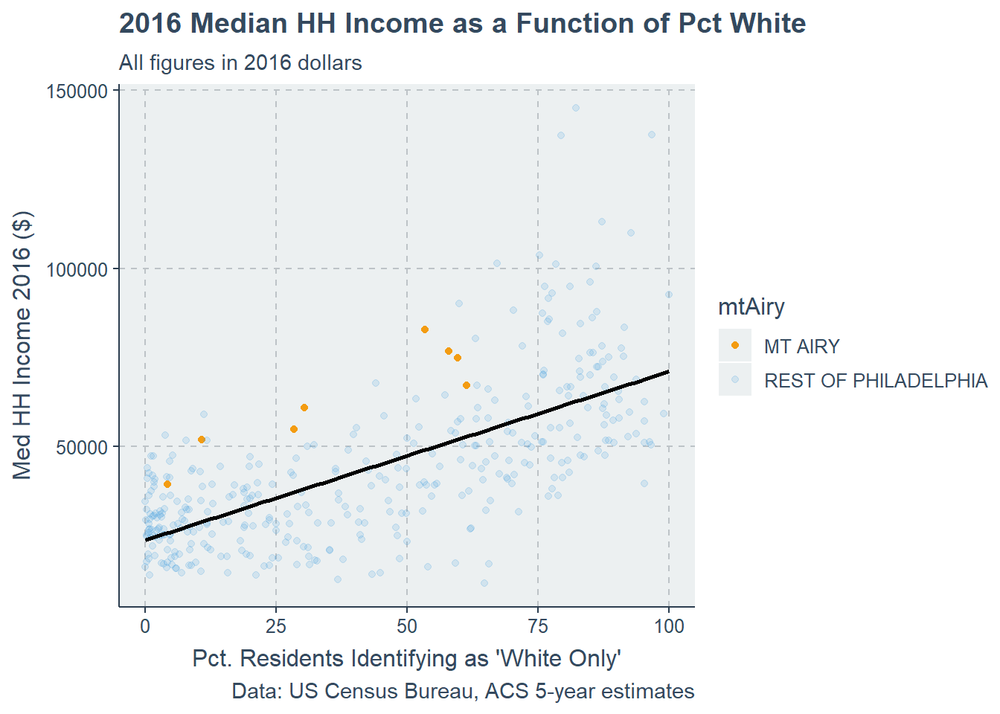
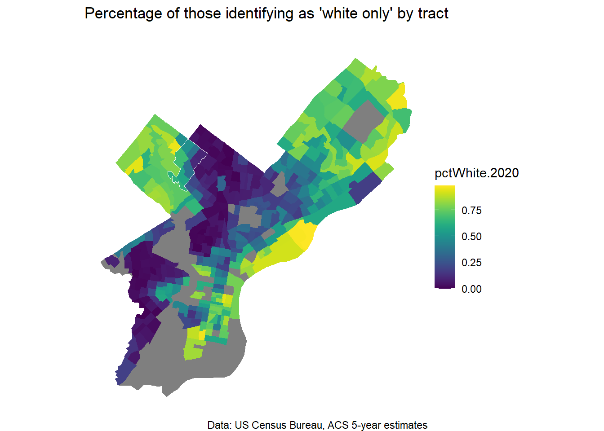

Lab 1 - Learning Tidy R With Census Data
Introduction
This tutorial will introduce you to the use of R for US Census data. This code uses the tidycensus package to query the US Census Bureau’s Application Programming Interface (API). An API is, roughly, a “place” on the internet which you can interact with using a computer program. In our case, we will interact with an API which allows us access to US Census Data - this is the same data library that the Census’ own website uses.
Perhaps more importantly, this tutorial introduces you to the tidyverse world of libraries - the best data wrangling, summarizing and visualizing tools available in R. These packages are designed to “play nice” with each other - none of them use the same function names and they are maintained together by a team of developers to make sure they work well.
R Studio publishes handy “cheat sheets” for popular R libraries, including data wrangling in the tidyverse.
This exercise consists of a few classic planner’s tasks:
Collecting and manipulating census data
Measuring demographic change over time for a given geography
Measuring statistics for a geography relative to a parent geography
Creating summary statistics regarding demographics for a collection of geographies
Setup
Install Libraries
If you haven’t installed either tidyverse, tidycensus, or sf use the install.packages command like so:
(If you have them installed, you can skip this step)
Once the packages are installed, you must load them using hte library command so that they are active in your environment.
Census API Key
You will need a “key” to access the Census API. You can find one at their website.
Load census data dictionaries
Now that we have our census credentials loaded, we can start downloading information from the API using some functions from tidycensus. We are going to make some comparisons between 2020 and 2016 ACS estimates for our target census tracts. In order to choose variables of interest, we are going to load the data dictionaries for each time period using load_variables.
What does this load_variables function do and why are we writing these things in the parentheses after the name of the function? If you want to know about a function in R, you can type the name of a package or function into the console like this: ??load_variables and information will show up in the help window in your R Studio environment.
Once we have loaded these data frames, we can observe and search through the data frames of variable information which should appear in our global environment either by clicking on them or using the View(YOUR DATAFRAME NAME HERE) command.
Let’s look around in these data frames for a few minutes and see what’s in there.
Downloading Data from Tidycensus
Create a vector of census variables
We can populate a vector of variable names we will send to the Census API. We call this list acs_vars. This is the beauty of a code-based workflow - you can take this vector and put anything you want in it when you have a new analysis to do and re-run it for different variables. These need to be character strings, and hence, in quotes as you see below.
Keep in mind the categories and code numbers change a bit over time - you may need separate vectors for different census years.
Call the Census API to get tract level data for 2020 for all of Philadelphia
We use the get_acs function in tidycensus to query the API. Notice the different arguments for the function, and that they require certain types of info. For example, geography requires one of a finite list of answers, and they have to be formatted as character string.
Remember the ?? function - you can learn about the parameters for get_acs this way. There is also a function called get_decennial which you can use for decennial census counts.
We ask for data on our acs_vars for all tracts in Philadelphia County, PA in 2020. We ask for “wide” data (e.g. one variable per column, one row per tract) and we set geometry to FALSE.
What happens when you set geometry to TRUE?
Wrangling Data with dplyr
Mutating, selecting and renaming variables
Now we can manipulate our data using some of our tidyverse data wrangling tools from the dplyr library.
The dplyr package is great for these operations and has some very common sense functions that are fairly intuitive because they use “verbs”. You can:
select columns (
select)rename columns (
rename)summarize data (
summarize) by groups (group_by)create new columns and specify their value (
mutate)
The operator %>% is known as the “pipe” and lets you chain operations together - passing a dataframe along through different operations.
Let’s manipulate our data using the “pipe” %>% and some tidy data wrangling commands. We will remove some variables using the “select” command and a parenthesis preceded by a minus sign. We will rename some variables using “rename”. We will create some new ones using “mutate”
First we select tract GEOID and NAME and only those variables in the acs_vars list - we are only using the estimates from the ACS (suffix “E” on the variable names), we are not retaining the margin of error calculations (suffix “M” on the variable names).
Look at the output and see what has changed.
Second we rename our variables to more common sense names.
Lastly we mutate a few new columns.
Let’s grab the 2016 data and do the same operations, but now - let’s chain the piped operations directly to the API call and do it all at once. The only difference here is that we are going to change the variable names to say “2016” in them, not “2020”.
Joining data
We can do a tabular join - each of our census dataframes should have a unique ID for each tract. You need to join columns that consist of the same type of data. Using the glimpse command can give you a quick overview of the data types for each column in your data set. Recall that joining character to numeric data is going to be a no-go.
There are four kinds of joins - you can learn about them here: https://rpubs.com/williamsurles/293454
We are going to do a “left join,” keeping all the observations from the left hand side of the join argument, and only those which match from the right. Ideally this consists of all of the observations from the right hand side considering we have the same geometries in 2016 and 2020.
Doing column math using mutate
The mutate function can be used to create new columns. These columns can be the product of arithmetic using other columns. Here we are going to calculate changes in inflation-adjusted median household income from 2016-2020 and the change in the percentage of people holding a graduate degree. (Notice how we multiply med_HH_Income.2016 by 1.08 to adjust it to 2020 dollars).
Notice that you are overwriting allACS with a new data frame called the same thing. You can overwrite anything if you create something with the same name - so be careful!
Exercise - Creating New Variables
Use the mutate command to create three new variables in your allACS data set. These variables can either be measures of change or proportions/percentages.
If you want, you can put some new variables in your ACS data sets by adding to acs_vars - just make sure you put something in the rename commands we used earlier if you want to have intelligible variable names.
Summarizing Census Data
Exploring central tendancies
Base R language has lots of summary statistical functions, like mean and median. We can apply these to columns in our data frame.
This one comes back NA. NA plus NA equals NA - so summarizing these data won’t work.
[1] NAOK, let’s try it again, using a workaround. Can you think of some reasons why omitting NA data might be problematic?
[1] 6012.472[1] 4873.76Exploring distributions
Base R has a graphics package - we can look at the distribution of the data, instead of just the central tendencies (e.g. mean and median).

We can also use the dynamic graphics package from the tidyverse, gglot2 to make some more detailed histograms. We have lots of aesthetic options here.
Make your own by changing the terms in the ggplot call - use a different variable and change the axis titles. You see we can build a nice plot with different elements using building blocks like geom_histogram.
Notice that the + sign does the same work in ggplot that the %>% does in tidy code.
Let’s make this a bit more complex, and add some labels.
Wow, there are some tracts with a huge increase in Med HH Income! What is the simplest explanation for that?
Making a summary table
The summarize function from the dplyr library is very powerful - you can use these summary functions in the context of a table - this is akin to “pivot tables” and other tools from Excel - but this is incredibly simple. You could create a table of statistics and easily export it for use in a report.
Comparing geographies
Let’s say you are a planner working for the City, and you are creating a neighborhood plan for a particular neighborhood. Our example neighborhood will be Mt. Airy, in Philadelphia’s Northwest section.
Let’s start by making a vector that has the GEOIDs of census tracts in Mt. Airy. The allACS$GEOID column is a CHARACTER, not a number, athough it appears numeric.
We can then create a vactor variable, which we call mtAiry, using a “boolean” statement.
We say that if a tract has a GEOID in myTracts, the variable mtAiry should take on a value of “MT AIRY”, or else it takes on a value of “REST OF PHILADELPHIA”
Let’s make a new summary table, this time accounting for the statistics for both Mt. Airy and the rest of the city.
We can see that city-wide, “on average” the mean tract income level increased, while the median level decreased. Why might this be?
We had the opposite dynamic in Mt. Airy, where median household income per tract rose, while mean income fell.
Graphic comparisons Using ggplot2
A graphical approach to subdividing and summarizing the data might make this easier to figure out.
We could compare the distributions between Mt. Airy and the City by taking our histogram we created earlier and using the facet_wrap option to subdivide the data and create a side-by-side comparison.
What can we see here about the distributions of the data, and how the distribution and the central tendencies might tell us different stories about what’s happening?

We can create a scatterplot to see what the relationship is between 2016 and 2020 income and where our Mt. Airy tracts fall.
Notice how we put the inflation adjustment right in the geom_point call - you can temporarily create new data inside your ggplot diagrams!
I set a fill parameter to differentiate between our factor levels in the data.
I add a line that represents y=x using geom_abline.
What do you think this line represents? How does it help us interpret these points we are seeing?

There are very well established correlations between socio-demographic characteristics and wealth in the US. Philadelphia is no exception. A simple scatterplot is stark evidence of this correlation.
We can plot a geom_smooth trendline in here using the method = "lm" e.g. a linear fit to see. The default for geom_smooth is much more wiggly and may not be the best for visuals like this.
How do our tracts in Mt. Airy look in the context of distribution of wealth and relative to the trend line?
If you plot these data for 2020, do they look different?

Spatial Data and Tidycensus
Tidycensus can also provide us with a geometry for our data. The sf package handles shapefiles and interfaces well with tidycensus to allow us to analyze and map spatial data. Next lesson we will do some spatial analysis using these data.
Let’s re-run our call for 2020 Census Data and turn the geometry = TRUE and then we can make a map of pctWhite.2020 using the tidycensus data right in ggplot using a special geom.
Notice that there is a geometry column in our data frame now - it’s actually an sf object, which is just like a data frame except it has a column with drawing instructions that you can’t operate on or alter.
Observe the use of the %>% operator here - I’m going to chain all of our operations together into one big chunk of code:
Now we can create a a geom_sf which will allow you to map sf objects in ggplot2 so long as they are have their projection set to WGS84 (aka web mercator). You can see above that we took the shapefile created by the tidycensus call and used the st_as_sf call to turn it into an sf object and set the crs (coordinate reference system) to 4326, which is the code for WGS84. You can find all these kinds of codes at spatialreference.org.
Notice we create a geom_sf which symbologizes our data and then another which is designed to represent the boundary of Mt. Airy.
In our next lesson, we will do more detailed cartography and spatial analysis using ggplot - using custom color palettes and more.

Discussion
DELETE—————-
Delete things below here
How would you describe the income and demographic statistics and trends in Mt. Airy relative to those of Philadelphia as a whole?
Do you have a particular hypothesis about “stories” about Mt. Airy based on a look at the data in a spatial format?
What do you think about the similarities and differences within the neighborhood? How can you probe at those using these data?
Can you think of any other ways to subdivide the data we looked at in class to glean more insights about Mt. Airy?
ADD———-
Add extra maps, charts, commentary
Assignment
- Check the class canvas page to see how this particular markdown needs to be edited to form your first assignment. If there is time in class, begin the assignment!